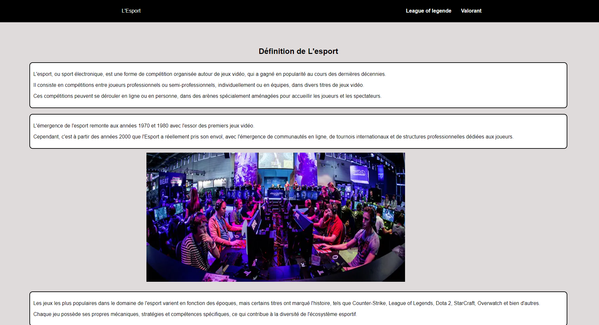
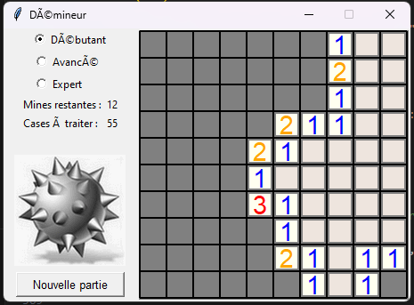

<!DOCTYPE C.png>
<C.png>

  <head>
    <meta charset="utf-8">
    <meta name="viewport" content="width=device-width">
    <title>En infos</title>
    <link href='https://unpkg.com/boxicons@2.1.4/css/boxicons.min.css' rel='stylesheet'>'
    <link href="style.css" rel="stylesheet" type="text/css" />

  <body>
    <section class="header">
      <header class="header">
        <a href="#" class="logo">Portfolio</a>

        <i class='bx bx-menu' id="menu-icon"></i>

        <nav class="navbar">
          <a href="index.html#portfolio">Portfolio</a>
        </nav>
      </header>
    </section>
    <section class="portfolio" id="portfolio">
      <h2 class="heading">Dernier<span>Projet!</span></h2>
      <h5 class="heading"> En <span>Info!</span></h5>
      <p>Bienvenue sur mon portfolio!</p>
      <p>Pour découvrir plus en détail mes projets, passez simplement votre souris sur les images.</p>
      <p>Voici trois projets réalisés pendant mes années de lycée et ma première année de BUT.</p> 
      <p>Ils illustrent mon évolution dans les langages de programmation tels que Python, HTML, CSS, PHP et JavaScript.</p>
      <div class="portfolio-container">
        <div class="portfolio-box">"
          
          <div class="portfolio-layer">
            <h4> creation d un site passion</h4>
            <p2>Voici un site sur une de mes passion!</p2>
            <p2>commune avec un binôme où on avait choisi l'Esport comme thème!</p2>
            <p2>ce qui montre ma capacité à travailler en équipe et de m'adapter au niveau de chacun de mes collaborateurs
              car on a des niveaux différents.</p2>
            <p2>ce projet a été réaliser au début de mon BUT1 uniquemet en HTML et CSS.</p2><a href="https://ludericbrosse.github.io/SitepassionLudericBrosse/" target="_blank"><i class='bx bx-link-external'></i> </a>
          </div>
        </div>
        <div class="portfolio-box2">
          <video width="600" height="600" controls autoplay muted>
            <source src="echec.mp4" type="video/mp4">
        </div>
        <div class="portfolio-box">
          
          <div class="portfolio-layer">
            <h4>Develpomment d'un jeux de démineur </h4>
            <br>
            <p2>Voici un jeu de démineur que j'ai créé en 1er! </p2>
            <p2>J'ai développé ce jeu pour augmenter mes compétences en python qui m'ont été utile en terminale!</p2>
            <p2>en cherchant des cours de Python sur internet je suis tombé sur le devoir d'un professeur sur ce jeu!
            </p2>
          </div>
        </div>
    </section>
    <script src="script.js"></script>
    <section class="Contact" id="Contact">
      <h2 class="heading">Contactez <span>moi</span></h2>
      
      <div class="social-icons">
        <div class="icon insta"><a href="https://www.instagram.com/luderic_brosse_/" target="_blank"><i class='bx bxl-instagram'></i></a></div>
        <div class="icon linkedin"><a href="https://www.linkedin.com/in/ludericbrosse/" target="_blank"><i class='bx bxl-linkedin'></i></a></div>
        <div class="icon mail"><a href="mailto:proludericbrosse@gmail.com" target="_blank"><i class='bx bx-envelope'></i></a></div>
      </div>
    </section>
    

    <footer class="footer">
      <div class="footer-text">
        <p>Copyright &copy; 2024 par Luderic BROSSE</p>
      </div>
    </footer>

  </body>

  </html>